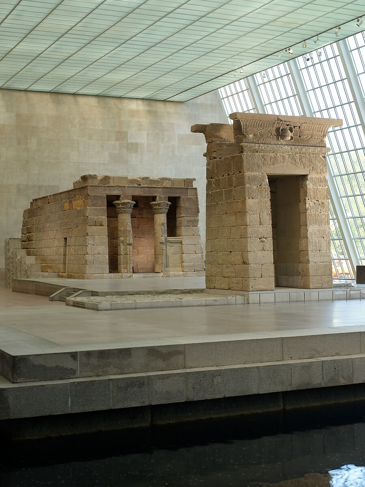
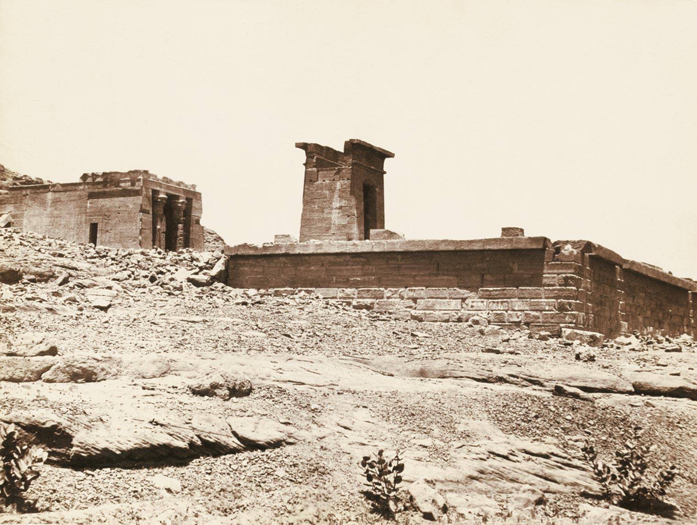

EGYPT & NUBIA · OBJECT JOURNEYS · STOP 03
A temple
beside the Nile.
Once part of a river landscape.
Now part of a museum.
Follow the Temple of Dendur from its museum home to the Nubian riverbank where its architecture and imagery served a sacred purpose.
Lower Nubia · Roman period · Reign of Augustus · No sound
← Return to Meketre’s model
LOWER NUBIA · THE ORIGINAL SITE
Before the museum.
A sacred home for Isis.
The temple was a dwelling for the goddess. Rituals and offerings of food, drink and clothing served her, supporting the community’s hopes for prosperity.
Dendur stood on the west bank of the Nile, south of modern Aswan. Its terrace rose above the river against a rocky slope.
This historical photograph records the temple at its original site—not how it looked when newly built.
Next: an artist’s interpretation of the riverside.
THE ORIGINAL LOCATION · CIRCA 1865–1885

Photograph by Antonio Beato, circa 1865–1885, reproduced by The Met.
View the museum’s account ↗LOWER NUBIA · REIGN OF AUGUSTUS
Stone, river & belief.
Choose a discovery. Compare with the real temple.
AI-created interpretation · Landscape, color and restored details are interpretive.